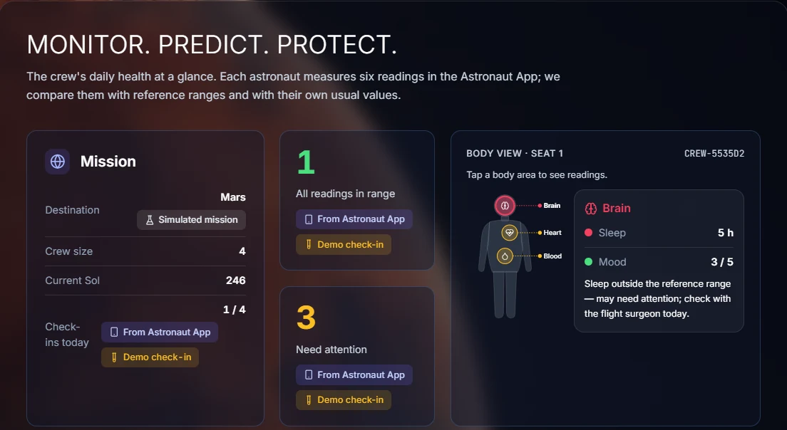
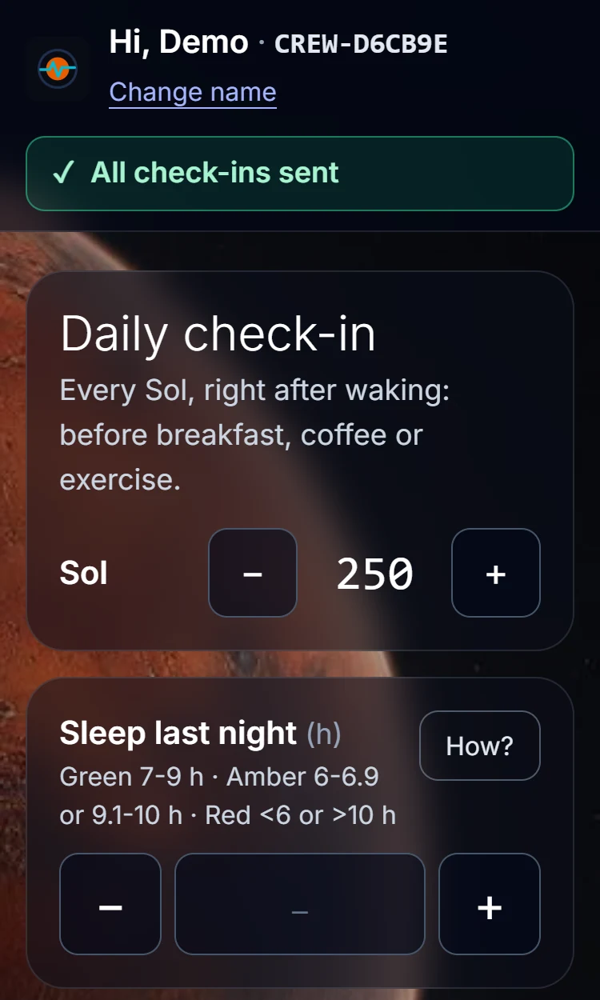
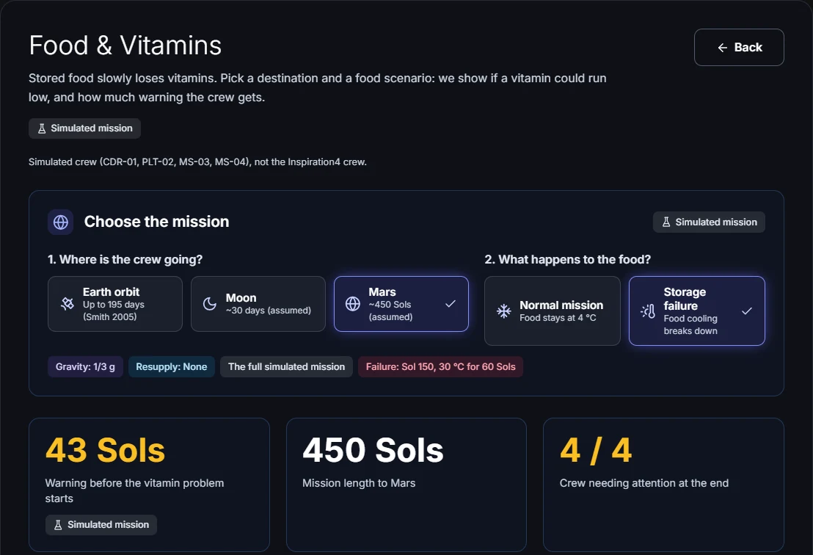
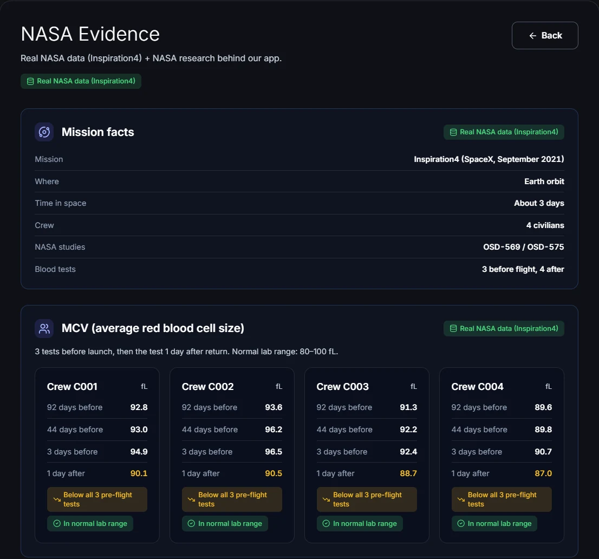

MARS FOOD INTELLIGENCE
Health monitoring that sees food-related risks before astronauts feel them
Challenge: Create Health Monitoring Software for Astronauts on Space Missions
Suleyman Hajizadeh · Banu Gurbanzada · Yunis Allahverdi · Faruk Karimli
On Mars, food slowly loses its vitamins — and nobody can check the crew’s blood in time.
A daily health check-in that tells astronauts what to do.
- Log 6 indicators: heart rate, blood pressure, blood sugar, temperature, sleep, mood.
- Compare with their OWN normal.
- Forecast vitamin levels from food and storage.
- Green / Yellow / Red: what to eat and when to call the flight surgeon.



Tested on real astronaut blood tests from NASA
OSDR shares Inspiration4 blood tests before and after its 3‑day flight: datasets OSD-569 and OSD-575.
Personal comparison catches what standard checks miss.
Limit: 4 people, 3 pre-flight tests each.

What we built, and when.
- Nov 8–11: original food & simulator app.
- Nov 13: first crew-health model.
Every number has a source: NASA OSDR · NASA JSC nutrition studies · NASA BVAD baseline · peer-reviewed papers. Simulated data is labeled.
Built for Mars. Useful on Earth.
Antarctic research stations, submarines, remote communities — anyone living for months on stored food.
Connect real wearable sensors · validate with more astronaut data · add more nutrients · live solar‑radiation alerts (NASA DONKI).
Catch the problem before the symptom.